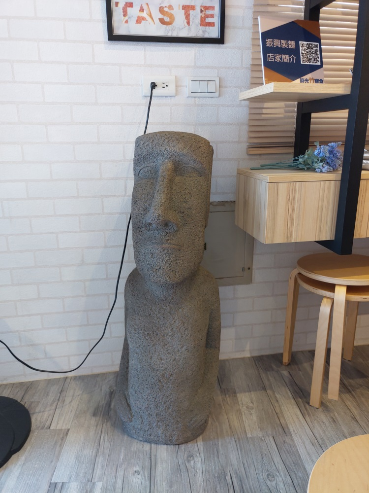
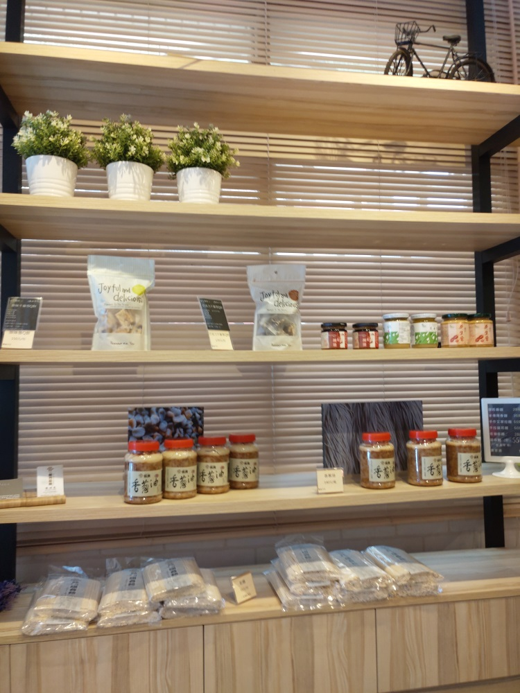
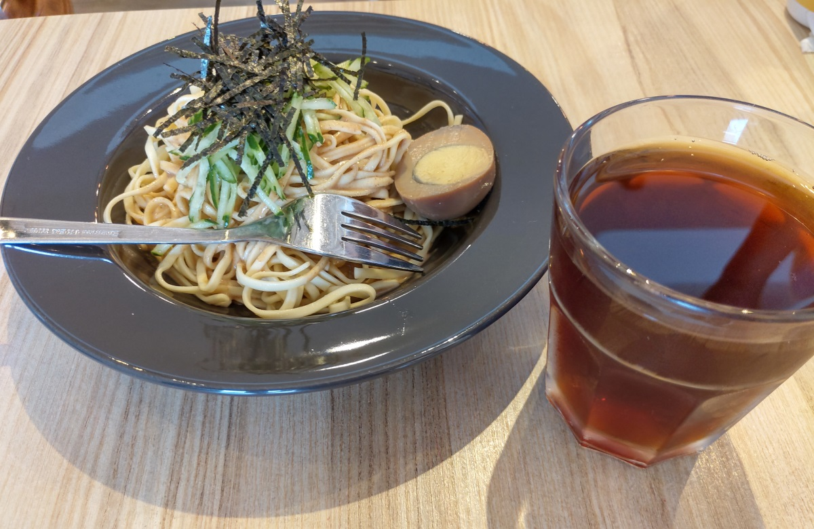
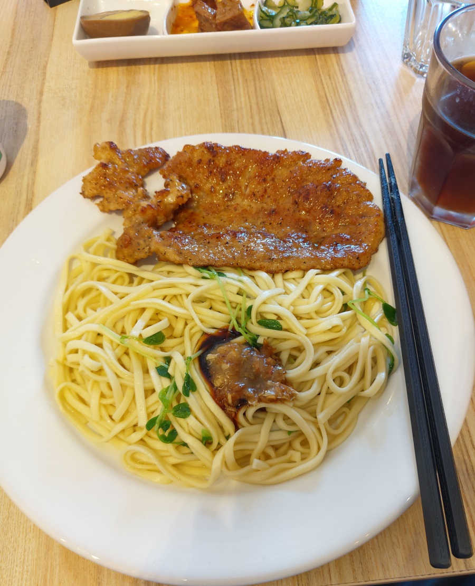

[關西] 振興關西扁麵 輕慢食
今天跑去買岳母愛的客家菜包，經過這間 振興關西扁麵，外觀有點現代感，眼睛一亮。 之前早就耳聞這間製麵廠傳了三代，麵本身堅持自然原料，香Q有咬勁，關西地區的麵店 普遍都採用。第三代還增加早午餐，大量使用自家的麵。立刻用手機查一下大略的 評價，大致不錯，就決定來踩雷一下。
店裡面擺了個 摩艾石像，挺有趣的。 
旁邊牆壁有貨架，感覺待會要點的乾麵，所用的醬料應該就是這裡賣的。也有麵條，Q餅糖果 等等。 
蒜香芝麻涼麵 + 古早味紅茶，麵體很Q，煮的恰到好處，芝麻醬也很香，攪拌均勻後，整體很好吃。 這個古早味紅茶味道很濃，有加入決明子，不像一般普通的紅茶泡的很稀，很不錯。 
豬排香蔥乾麵 + 古早味紅茶，紅茶部分當然一樣，香蔥乾麵的醬也是傳統好味，與麵拌勻後也好吃。 豬排煎的也挺香的。 還有附三道小菜。 
比較特殊的是，還有賣 熱壓吐司，聽說還加自家麵條，非常神奇的組合，不過今天沒試它了，下次再說吧。
這間店，位於交通要道，附近橋下有個大空地，停車很方便。橋的另一頭，有個 東安橋頭牛肉麵， 也很出名。順道經過時，都可以嚐嚐鮮。